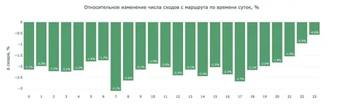
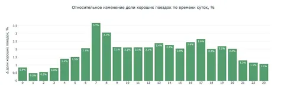
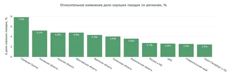

С недавних пор ранжированием маршрутов на Картах занимается ML‑модель, обученная на реальном поведении пользователей. Она учитывает не только время в пути, но и то, по каким маршрутам водители доезжают до конца, не сходя с дистанции.
Как именно модель понимает, какой маршрут предлагать пользователям первым, подробно рассказал на Хабре Илья Хохлов, руководитель службы разработки сервисов маршрутизации. А мы собрали интересные тезисы из статьи.
Почему важен порядок показа маршрутов
Порядок показа во многом определяет дальнейшее поведение пользователя. Чаще всего человек просто нажимает «Поехали» — и едет по первому предложенному пути.
Долгое время этот порядок формировался сортировкой по ETA (Estimated time of arrival), из‑за чего удобные и предсказуемые маршруты (которые пользователи чаще выбирают интуитивно) не оказывались на первом месте, а иногда вовсе выпадали из топ-3.
Обучение на выборах пользователей
Сначала команда пыталась обучать ранжирование на кейсах, когда пользователь осознанно выбирал не первый маршрут. Но таких случаев было слишком мало — на практике чаще выбирают именно первый маршрут, а уже позже отклоняются от него. Обучить ML‑модель ранжирования на этом количестве данных не получилось.
Таргет для обучения модели — реальное поведение
Тогда попробовали учитывать то, насколько реальный трек поездки совпадает с первым маршрутом. Это стало таргетом для обучения ML‑модели ранжирования: чем выше совпадение, тем более удачным считается маршрут.
Как правило, более простой маршрут имеет меньше сходов, даже если поездка по нему чуть дольше. С другой стороны, маршрут может формально выигрывать по времени, но, скажем, включать сложный манёвр. И без хорошего знания местности можно пропустить нужный поворот.
Эффект от нового подхода хорошо был заметен на маршрутах через центр города — с более сложной дорожной обстановкой. Их доля снизилась в выдаче на 3%. Также стало меньше маршрутов, проходящих через зоны с проблемным GPS.
Выбор функции потерь
Сначала попробовали применить функцию YetiRank, которая оптимизирует позиции самых релевантных объектов. На старте был заметный эффект, но подход не учитывал, что при выборе одного маршрута остальные перестают существовать для пользователя — он не строит рейтинг маршрутов.
Поэтому от классического ранжирования перешли к задаче выбора, используя функцию потерь на основе Softmax с one‑hot‑таргетом.
Для каждой поездки модель получает набор альтернативных маршрутов и учится распределять между ними вероятности выбора. One‑hot‑таргет указывает, какой маршрут в итоге выбрали, а Softmax позволяет напрямую оптимизировать вероятность этого выбора относительно остальных вариантов. В результате модель учится не просто упорядочивать маршруты, а предсказывать, какой из них с наибольшей вероятностью будет выбран в реальной поездке.
Что показал AB-эксперимент
— Число сходов снизилось в среднем на 2,19%;
— Доля хороших поездок без сходов с маршрута выросла на 2,16%;
— Базовое поведение пользователей при этом не изменилось: около 92% поездок по-прежнему начинаются с первого предложенного маршрута;
— Эффект зависит от региона, и там, где явные проблемы с GPS, он выражен сильнее — например, в Северной Осетии доля хороших поездок выросла на 8%;
— В ряде регионов уменьшаются сходы с выигрышем по времени — например, в Узбекистане — на 8,5%, в Казахстане — на 6,6%.
Новые предложенные маршруты — уже в Картах и Навигаторе, а детали и примеры — в полной хабростатье.
ML Underhood


